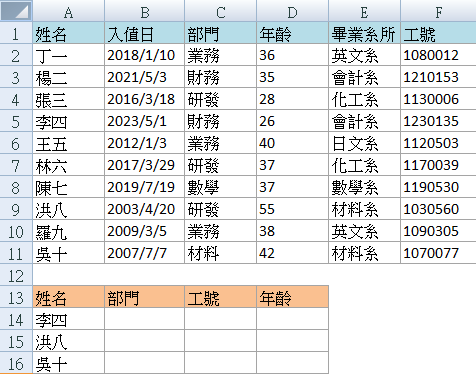
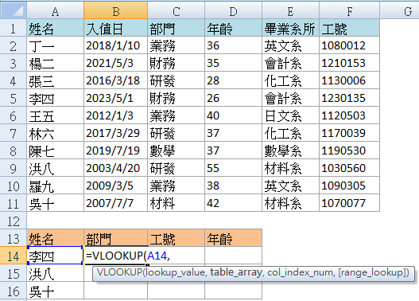
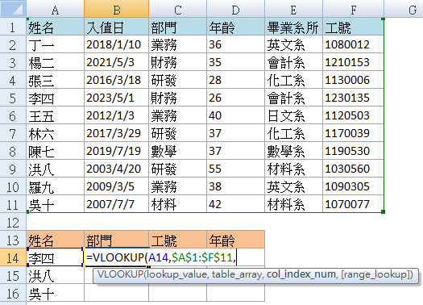
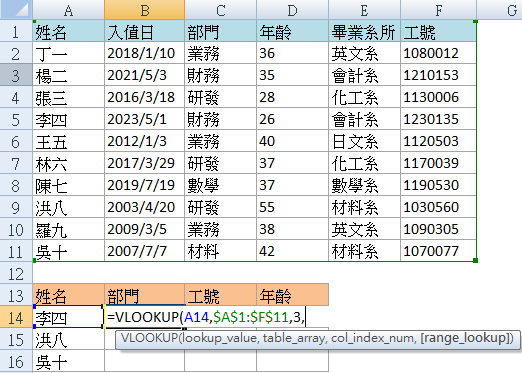
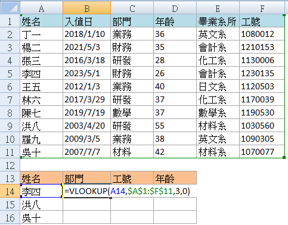
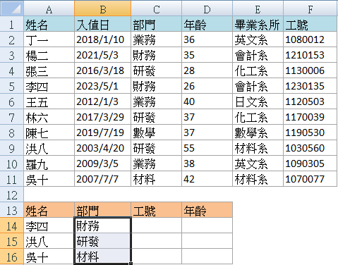
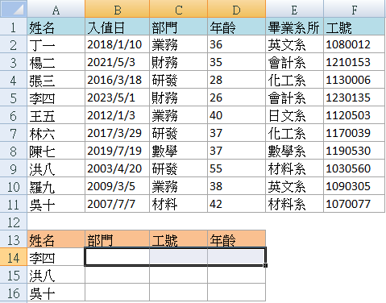
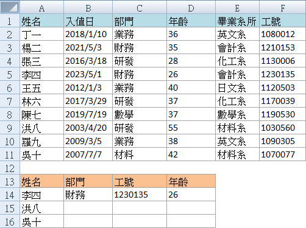
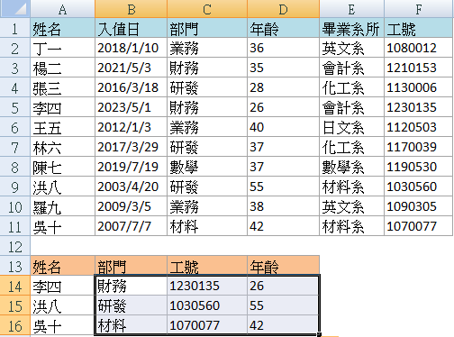

Excel VLOOKUP 函數詳細教學：從基礎到進階應用

Excel 中的 VLOOKUP 函數是一個非常實用的工具，用於在範圍內進行"垂直方向"的查找並返回相應的數值。無論是在日常工作中處理大規模數據，還是在分析資料時需要快速定位特定信息，VLOOKUP 都能提供極大的幫助。本文將詳細介紹 VLOOKUP 函數的基本語法和使用方法，並通過實例說明如何在工作中應用此函數。
VLOOKUP 函數簡介
VLOOKUP（Vertical Lookup）是 Excel 中用於在數據表中按列查找值的函數。其基本語法如下：
VLOOKUP(lookup_value, table_array, col_index_num, [range_lookup])
- lookup_value：要查找的目標值。
- table_array：包含查找數據的範圍。
- col_index_num：目標值所在的列索引號。
- range_lookup：指定查找方式，FALSE 表示精確匹配，另一個標示方法為0，TRUE 或省略表示近似匹配，可以標示為1。
VLOOKUP 的基本應用範例：查找員工資料
以下是通過具體例子說明如何在 Excel 中使用 VLOOKUP 函數，假設老闆需要我們從公司上百人的員工資料中，挑出少數人的部門、工號和年齡資訊。這時我們可以使用 VLOOKUP 函數來實現。
操作步驟
設置查找範圍
假設我們有以下員工資料表（上方藍色表單），我們需要將資料查找到另一張表單（下方杏色表單）中：

在 B14 儲存格輸入公式
在 B14 儲存格中輸入公式：
=VLOOKUP(A14, $A$1:$F$11, 3, 0)
其中，A14 是我們查找的目標，$A$1:$F$11 是藍色表格的範圍，3 表示在第三欄（部門）進行垂直查找，0 表示精確匹配。
- A14 是我們查找的目標

- $A$1:$F$11 是藍色表格的範圍

- 3 表示在第三欄（部門）進行垂直查找

- 0 表示精確匹配

按下 Enter 鍵，然後拖曳 B14 儲存格右下角的填充柄，將公式複製到 C14 和 D14 儲存格。這樣就能自動填充工號和年齡資訊。

VLOOKUP 的進階應用範例：在 VLOOKUP 中加入數組公式
在 Excel 中，使用數組公式來應用 VLOOKUP 函數，可以同時查找多個列的數值，這樣可以避免多次輸入和複製公式的麻煩。
數組公式（Array Formula）是一種特殊的公式類型，它可以在多個儲存格中同時進行計算。在使用 VLOOKUP 函數進行多列查找時，數組公式非常有用。
承接上述文章的例子，在上述文章我們已經完成了第一欄"部門"資料的查找，但對於"工號"、“年齡”，我們不想再重新輸入公式，那麼該怎麼做呢?
操作步驟
設置範圍
框選你的資料表和目標表設置如下：

在 B14 儲存格輸入公式
=VLOOKUP(A14, $A$1:$F$11, {3, 4, 5}, 0)
- A14 是我們查找的目標。
- $A$1:$F$11 是藍色表格的範圍。
- {3, 6, 4} 是數組，表示在第三、第六和第四列中查找目標值。
- 0 表示精確匹配。

按下 Ctrl + Shift + Enter 鍵
不要只按 Enter 鍵，而是按 Ctrl + Shift + Enter 鍵，這樣 Excel 會將你的公式作為數組公式來處理。
當你按下 Ctrl + Shift + Enter 鍵後，Excel 會自動在 B14、C14 和 D14 中填入相應的部門、工號和年齡資訊。如果你只按 Enter 鍵，Excel 只會在 B14 中輸出結果，無法填入其他儲存格。
這樣，李四的資料會一次性填寫完成。

向下填充
接著你可以將這三個儲存格向下拖曳，自動填充其他員工的相關資料。

為什麼需要學習 Excel？AI 工具無法完全取代 Excel 的理由
學習 Excel 是每位現代職場人士必備的技能之一。Excel 不僅可以提升數據處理、分析能力，還能讓我們在工作中大幅提高效率。透過掌握 Excel 公式、圖表、VBA 巨集等技巧，許多重複性工作都可以被自動化處理，這能大大減少人為錯誤，並加快工作進度。
Excel 尤其在以下領域中發揮著關鍵作用：
- 財務與會計：Excel 的數據處理功能讓它成為財務人員的得力助手，無論是生成財務報表、進行預算編制，還是管理應收應付款。
- 數據分析與商業決策：Excel 可用來進行高效的數據分析，通過樞紐分析和圖表快速提取數據背後的洞見，幫助管理層作出明智的商業決策。
- 專案管理與行政工作：Excel 的自訂格式和範本功能可以用來管理專案進度，進行工作安排，讓行政工作者更輕鬆地跟進日常任務。
AI 工具的崛起與局限性
隨著 AI 工具（如 ChatGPT）的崛起，您可能會想：還需要學習 Excel 嗎？事實上，AI 工具確實能夠幫助生成並解釋 Excel 中的公式，這對解決一些簡單的數據處理問題非常有幫助。例如：
- 免費版的 ChatGPT 3.5 可以生成基本公式，如
SUM、VLOOKUP、IF，並解釋它們的用途。 - 付費版的 ChatGPT 4.0 能進一步協助處理更複雜的數據分析任務，如多步驟公式、數據模型和自動化流程。
然而，對於不熟悉 Excel 的人來說，單靠 AI 工具往往很難有效驗證結果，也難以靈活應對各種數據處理場景。因此，學習 Excel 的基礎知識仍然是必要的，這能幫助您更好地理解 AI 工具的輸出，並高效地與 AI 協同工作。
書本自學：從入門到進階的學習資源
如果你偏愛通過閱讀學習，以下這幾本書都是提升工作效率的好選擇，適合從入門到進階的 Excel 使用者。
1. 《Excel 自學聖經 (第二版)》
這本書被廣泛推薦為入門級的 Excel 學習資源，涵蓋從基本操作到高階應用。書中配有大量範例與圖表，能幫助讀者更好地掌握 Excel 中的公式、函數、資料整理等技巧。特別適合想要全面掌握 Excel 基礎的讀者。
2. 《Excel 最強商業實戰書：濃縮於一冊！》
點我前往金石堂 《Excel 最強商業實戰書：濃縮於一冊！》
這本書專注於商業應用場景，適合希望將 Excel 應用於財務、商業決策、數據分析等領域的使用者。書中的實例非常接地氣，能幫助您快速應用到實際工作中，是提升職場競爭力的利器。
線上課程：彈性學習，提升效率
線上課程提供了靈活的學習方式，不僅可以讓您在任何時間、任何地點進行學習，還能隨時更新學習內容，確保您掌握的技能與最新趨勢接軌。這對於工作繁忙的專業人士來說尤為方便，此外線上課程的價格通常比實體課程更具競爭力。
Hahow 線上課程平台
Hahow 是一個受歡迎的學習平台，涵蓋多種專業課程，適合不同層級的學習者。平台上的課程內容實用，並且由專業講師授課，讓學員可以在短時間內掌握實用技能。
- Excel 新手入門必修課：這門課程專為初學者設計，能幫助您快速上手 Excel 的基本操作與數據處理。
- 職場必備的 Excel 進階技法：針對有一定基礎的使用者，進一步學習進階函數、樞紐分析、圖表設計等技法。
Udemy 線上課程平台
Udemy 提供了豐富的課程選擇，無論是技術技能（如 Excel、Python），還是軟技能（如時間管理、領導力），您都能在 Udemy 上找到適合的課程。該平台經常提供折扣，尤其在促銷期間，您可以以實惠的價格學到高品質的內容。
- Udemy 線上課程－Excel：這門課程從基礎開始，一直到進階的樞紐分析和數據可視化，適合希望快速提升 Excel 技能的人士。
延伸閱讀
如果您想要更深入了解 Excel 的使用技巧，請點擊以下連結閱讀更多相關文章：點我前往更多文章